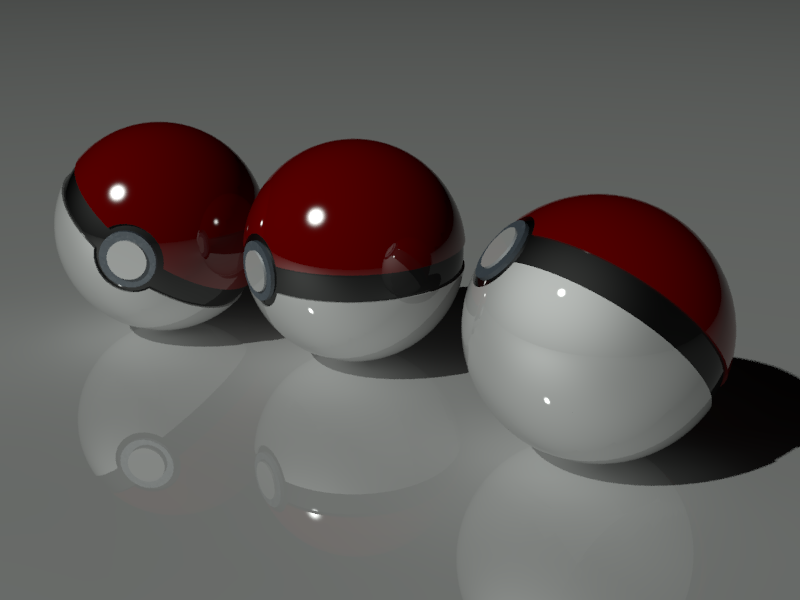
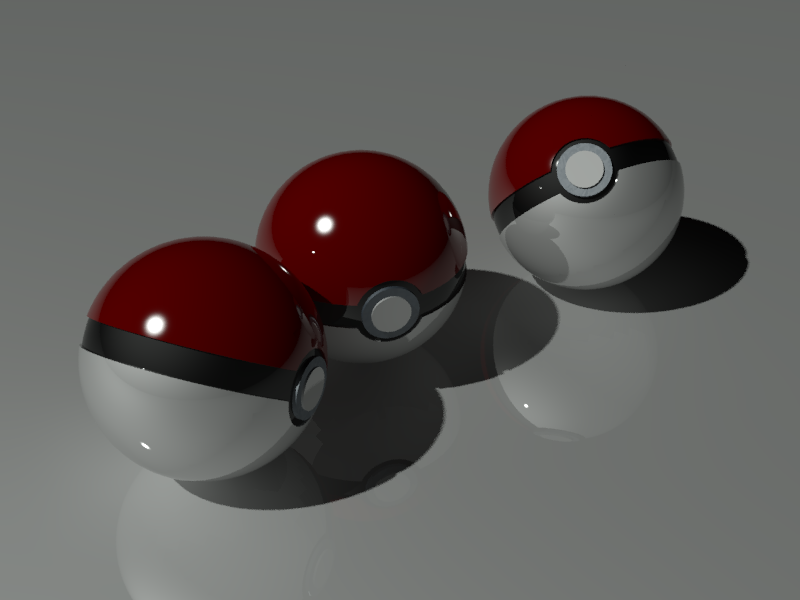
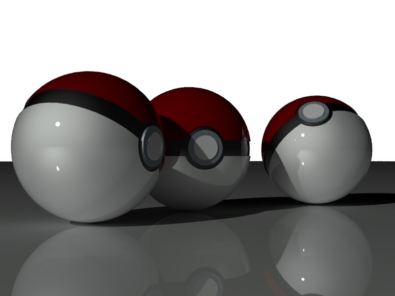

大家好：
在此我就不多說，各位應該知道這是啥吧！
有興趣的朋友一起來練習，玩樂之餘順便強化一下3D功力喔
----------------------------------------
1.使用版本：AutoCAD 2017
2.完成日期：2016.08.08
3.建模時間：約10分鐘
4.彩現時間：每張約10秒（800x600）
5.作品簡介：使用AutoCAD 2017彩現。
圖片：



▼AutoCAD 3D Pokémon Go 精靈球-建模步驟分享
影片網址： https://youtu.be/ECDo6orOP4c